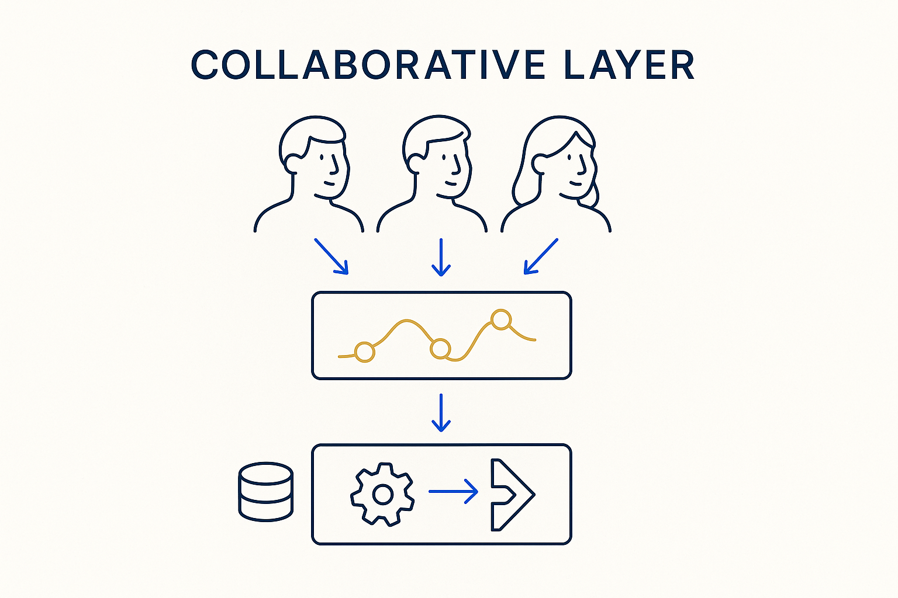

A layer where stakeholders can look at newly modeled transformation logic or data from new sources the moment it's being modeled — not at release time — so gaps between expectation and result surface early.

> A layer where stakeholders can look at newly modeled transformation logic or data from new sources the moment it's being modeled — not at release time — so gaps between expectation and result surface early.
The collaborative layer is a place where stakeholders can look at the work *while it is being done.* The moment you model a new transformation, or pull in data from a new source, they can see the newly modeled or remodeled logic and the actual results — not a slide about it, the real thing. It turns modeling from a private activity into a shared, live workspace where the domain experts are present as you build, not summoned at the end.
The reason this matters is timing. Today, discrepancies between what the business expected and what the model actually produces are often discovered late — when a release is finally pushed to an acceptance environment and someone notices the numbers are wrong. By then the misunderstanding is expensive to unwind. A collaborative layer lets those gaps surface much earlier: the stakeholder sees the transformation logic and the sample results as they take shape, and says “that’s not what I meant” on day one instead of week ten.
It is where shift-left and feedback become concrete. The layer is the shared surface; shift-left is the principle of moving the check earlier; feedback is what flows through it. Build the collaborative layer and correction happens continuously, against real logic and real data, long before acceptance.
Where it lives: the collaboration layer of Breakthrough Modeling — stakeholders looking at the work while it’s still being modeled.
[Read the article ↗](https://medium.com/towards-data-engineering/the-collaborative-layer-where-business-and-data-engineering-meet-387fe0c8d080)